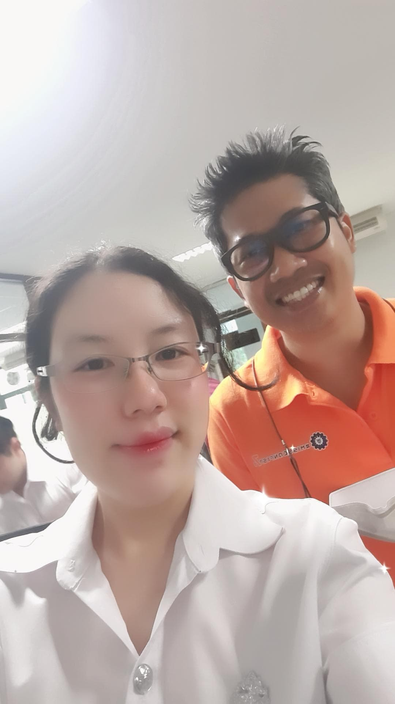

ICT SU Ananya Vasanasong 651310090

- Full name(Eng):Ananya Vasanasong
- Full name(TH):อณัญญา วาสนาส่ง
- Nickname:เอม
- Guest:พี่เเมน
- Quality Attributes
- Chat GPT:ความยืดหยุ่น (Flexibility) เป็นคุณสมบัติหรือลักษณะของระบบหรือผลิตภัณฑ์ที่แสดงถึงความสามารถใการปรับเปลี่ยนหรือปรับปรุงเพื่อเหมาะสมกับสถานการณ์หรือความต้องการที่เปลี่ยนแปลง ความยืดหยุนเกี่ยวข้องกับการทำให้ระบบหรือผลิตภัณฑ์สามารถทำงานในสภาพแวดล้อมที่เปลี่ยนแปลงอย่างกว้างขวาง ระบบหรือผลิตภัณฑ์ที่ยืดหยุนสามารถปรับปรุงความสามารถของมันเพื่อเหมาะสมกับการเปลี่ยนแปลงในความต้องการหรือการเปลี่ยนแปลงในการกำหนfค่า การทำให้ระบบหรือผลิตภัณฑ์มีความยืดหยุนสามารถเป็นสิ่งสำคัญในระบบซอฟต์แวร์ที่ต้องปรับปรุงและปรับเปลี่ยนเพื่อตอบสนองต่อความต้องการหรือสถานการณ์ที่เปลี่ยนแปลงอย่างต่อเนื่อง เช่น เพิ่มความสามารถใการปรับเปลี่ยนการตั้งค่า ปรับปรุงฟีเจอร์ หรือเปลี่ยนแปลงส่วนของระบบเพื่อให้ตอบสนองต่อการเปลี่ยนแปลงในสภาพแวดล้อมหรือความต้องการของผู้ใช้ การความยืดหยุนเป็นสิ่งสำคัญใการสนองต่อการเปลี่ยนแปลงและการปรับเปลี่ยนใการโลกของซอฟต์แวร์และเทคโนโลยีที่เปลี่ยนแปลงอย่างต่อเนื่อง
- Google Bard: Flexibility ใน Quality attributes หมายถึง ความสามารถใการปรับเปลี่ยนหรือปรับตัวให้เข้ากับการเปลี่ยนแปลงได้ โดยไม่กระทบต่อคุณภาพของผลิตภัณฑ์หรือบริการ ความยืดหยุ่นเป็นคุณสมบัติที่สำคัญใยุคปัจจุบันที่จะช่วยให้ผลิตภัณฑ์หรือบริการสามารถตอบสนองความต้องการของลูกค้าได้อย่างต่อเนื่องและแข่งขันได้ในตลาดที่เปลี่ยนแปลงอย่างรวดเร็ว
- สรุปด้วยตัวเอง: Flexibility คือ ความยืดหยุนใการปรับเปลี่ยน เป็นความสามารถของระบบที่จะปรับให้เข้ากับสภาพแวดล้อมและสถานการณ์ที่แตกต่างกันเพื่อเผชิญกับการเปลี่ยนแปลง